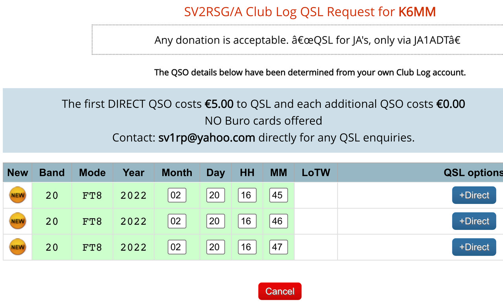

Just a comment about being in the log: I worked Monk Apollo on Mt. Athos a few years ago so this wouldn’t be an ATNO for me, but I thought I’d try for a 20M FT8 QSO. On Sunday, February 20 at 16:00z I started calling SV2RSG/A on 14.090 FT8, along with many other DXers. At 16:45 he came back to me with a -12 report. I sent a -18 report and waited. No RR73 from him. At 16:46 he sent me another -12 report. I sent -19 and waited again. No RR73 from him. At 16:47 he came back to me with a -11 report. I gave him another -19. Still no RR73 confirmation. Just for fun, I logged each of these "QSO attempts" in my logger, DXKeeper, with a comment for future reference. Yesterday, I checked ClubLog and was amazed to find that even though I had not received any final 73 confirmations from him, he logged all 3 report exchanges as valid QSOs. See attached. This brings up the question: “What is a valid FT8 QSO” — and is that final “RR73” fluff or necessary? One source explains: "The authors of WSJT-X and designers of the protocols used therein based the form of a minimal QSO on best practice used in EME and meteor scatter where QSOs are hard to complete and many retries are often necessary. The sending of a 73 message is considered no more of a courtesy and should not be considered as part of the QSO other than perhaps a way of saying I have logged the QSO and you can stop sending messages to me.” And from September 2018 QST, page 94: “Joe Taylor, K1JT, developed FSK441 and WSJT-X for use in meteor scatter. The exchanges in FSK441 are similar to those used in SSB and CW meteor scatter schedules. Due to the intermittent nature of meteor scatter pings and bursts, sometimes stations didn’t know if they were done…..so it is conventional to send 73’ to signify that you are done. FT8 incorporates the same exchange format as its predecessor. Thus, sending or receiving a “73” message is not required for a complete, valid contact in FT8 or other modes." My interpretation: If both you and the other station exchanged signal reports it should be a valid contact. Sending 73 is just a courtesy to say goodbye. However, you are completely dependent on the other station’s decision whether to log you without receiving a final RR73 from you. If he/she does, then when you upload your QSOs to LoTW or ClubLog, there should be a perfect match on Band, Mode, Date and Time. In my case, after exchanging reports three times, apparently that was good enough for SV2RSG/A. He might have sent me a RR73 but I never decoded it. Nevertheless: “I’m in the log”. Bottom Line: If you’ve exchanged signal reports with a rare one on FT8 — with or without a final RR73 — always take a screen snapshot or log temporarily because "you never know”. 73 John, K6MM 
|